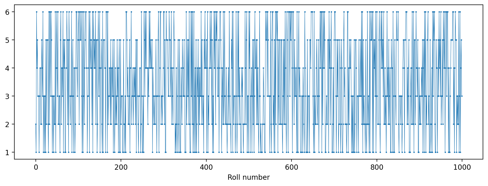
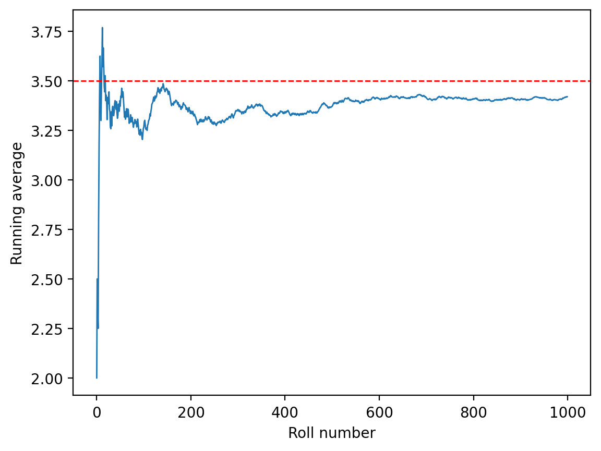
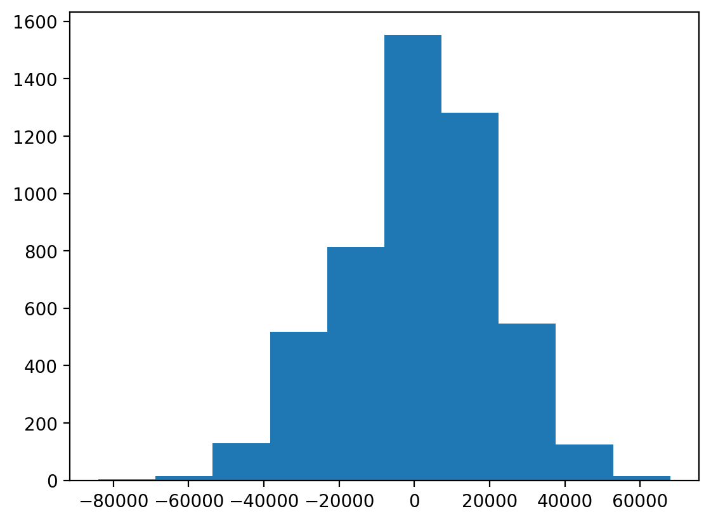
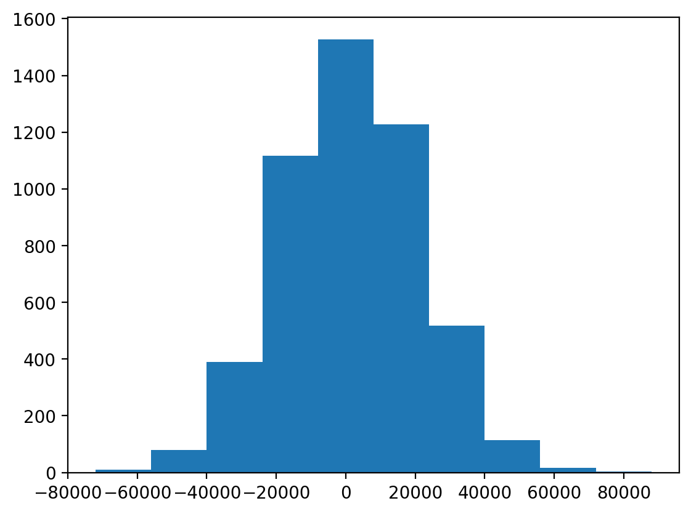
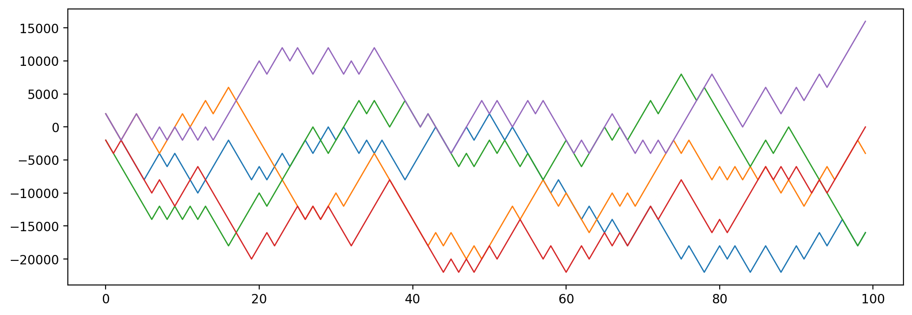
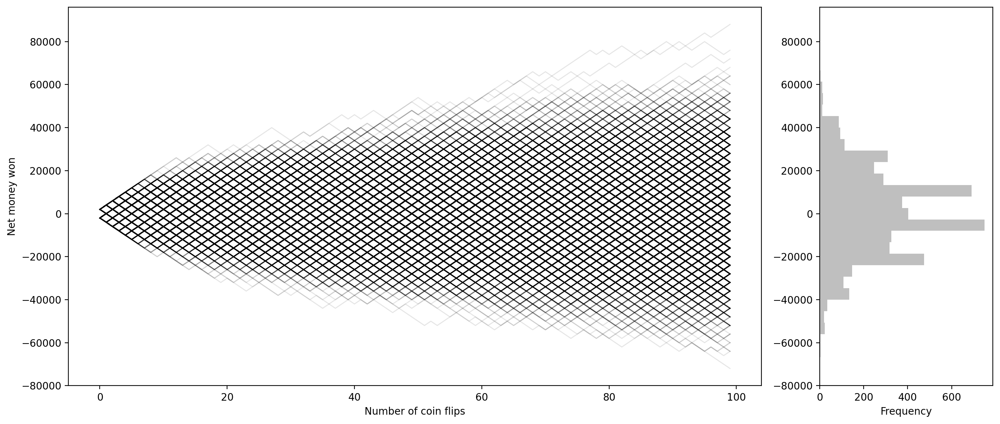
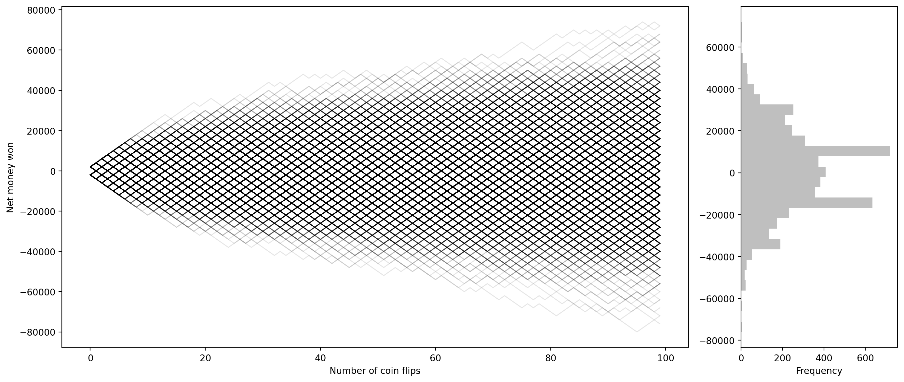

import numpy as np
import torch
import torch.distributions as dist
import pandas as pd
import matplotlib.pyplot as plt
%matplotlib inline
%config InlineBackend.figure_format = 'retina'dice = dist.Categorical(probs=torch.tensor([1/6]*6))
# Sample N dice rolls
N = 1000
rolls = dice.sample((N,)) + 1
# 1 is added to the sample because the sample is 0-indexedrolls[:10]tensor([2, 1, 6, 4, 5, 3, 3, 3, 1, 3])fig, ax = plt.subplots(figsize=(12, 4))
ax.plot(rolls, lw=0.5, marker='o', markersize=1)
ax.set_xlabel('Roll number')Text(0.5, 0, 'Roll number')
pd.Series(rolls).value_counts().sort_index()1 180
2 160
3 187
4 146
5 159
6 168
Name: count, dtype: int64# Running average
runing_avg = torch.cumsum(rolls, dim=0) / torch.arange(1, N+1)plt.plot(runing_avg, lw=1)
plt.xlabel('Roll number')
plt.ylabel('Running average')
plt.axhline(3.5, color='red', lw=1, ls='--')
def compute_running_avg(N):
rolls = dice.sample((N,)) + 1
runing_avg = torch.cumsum(rolls, dim=0) / torch.arange(1, N+1)
return runing_avgdist = torch.distributions.Bernoulli(probs=0.5)
samples = dist.sample((100,))samples.mean()tensor(0.4900)pd.Series(samples.numpy()).value_counts()0.0 51
1.0 49
Name: count, dtype: int64# Game of winning and losing money based on a coin flipwin_amt = 2000
loss_amt = -2000
total_count_N = 100 # Number of coin flips
dist = torch.distributions.Binomial(total_count_N, probs=0.5)num_samples = 5000 # number of players/Number of times we perform total_count_N coin flipsnum_times_wins_across_samples = dist.sample((num_samples,))num_times_wins_across_samples[:100]tensor([50., 54., 51., 50., 55., 48., 46., 57., 47., 48., 50., 57., 52., 44.,
52., 48., 45., 56., 49., 51., 45., 54., 51., 50., 48., 58., 43., 43.,
55., 50., 50., 52., 47., 42., 45., 50., 56., 55., 57., 46., 65., 52.,
50., 58., 53., 50., 61., 46., 54., 51., 49., 46., 43., 53., 56., 55.,
53., 48., 49., 45., 60., 52., 54., 50., 59., 52., 51., 41., 51., 59.,
40., 56., 55., 55., 50., 49., 47., 54., 51., 51., 49., 51., 58., 54.,
52., 64., 60., 51., 55., 45., 45., 42., 50., 43., 42., 51., 43., 55.,
48., 60.])if num_samples<=50:
fig, ax = plt.subplots(figsize=(12, 4))
pd.Series(num_times_wins_across_samples.numpy()).plot(kind='bar', rot=0, ax=ax)
plt.xlabel('Sample number')
plt.ylabel('Number of wins')net_money_won = num_times_wins_across_samples * win_amt + (total_count_N - num_times_wins_across_samples) * loss_amt
net_money_won_series = pd.Series(net_money_won.numpy())net_money_won_series0 0.0
1 16000.0
2 4000.0
3 0.0
4 20000.0
...
4995 -24000.0
4996 16000.0
4997 -16000.0
4998 -40000.0
4999 0.0
Length: 5000, dtype: float32if num_samples<=50:
fig, ax = plt.subplots(figsize=(12, 4))
net_money_won_series.plot(kind='bar', rot=0, ax=ax)
ax.axhline(0, color='red', lw=1, ls='--')net_money_won_series.hist(grid=False)
net_money_won_series.mean()np.float32(409.6)net_money_won_series.var()np.float32(399822600.0)net_money_won_series.var()/((win_amt**2) * total_count_N)np.float32(0.9995565)# same analysis but starting from Bernoulli distributionwin_amt = 2000
loss_amt = -2000
total_count_N = 100 # Number of coin flips# Simulate game
dist = torch.distributions.Bernoulli(probs=0.5)overall_samples = dist.sample(torch.Size([num_samples, total_count_N]))overall_samples.shapetorch.Size([5000, 100])overall_samples_df = pd.DataFrame(overall_samples.numpy())overall_samples_df.head()| 0 | 1 | 2 | 3 | 4 | 5 | 6 | 7 | 8 | 9 | ... | 90 | 91 | 92 | 93 | 94 | 95 | 96 | 97 | 98 | 99 | |
|---|---|---|---|---|---|---|---|---|---|---|---|---|---|---|---|---|---|---|---|---|---|
| 0 | 1.0 | 0.0 | 0.0 | 0.0 | 0.0 | 0.0 | 1.0 | 1.0 | 0.0 | 1.0 | ... | 1.0 | 0.0 | 1.0 | 1.0 | 0.0 | 1.0 | 1.0 | 0.0 | 0.0 | 1.0 |
| 1 | 1.0 | 0.0 | 0.0 | 1.0 | 1.0 | 0.0 | 0.0 | 0.0 | 1.0 | 1.0 | ... | 0.0 | 0.0 | 1.0 | 1.0 | 1.0 | 0.0 | 1.0 | 1.0 | 1.0 | 0.0 |
| 2 | 0.0 | 0.0 | 0.0 | 0.0 | 0.0 | 0.0 | 0.0 | 1.0 | 0.0 | 1.0 | ... | 0.0 | 0.0 | 0.0 | 0.0 | 0.0 | 0.0 | 0.0 | 0.0 | 0.0 | 1.0 |
| 3 | 0.0 | 0.0 | 1.0 | 0.0 | 0.0 | 0.0 | 0.0 | 1.0 | 0.0 | 0.0 | ... | 1.0 | 0.0 | 0.0 | 1.0 | 0.0 | 1.0 | 1.0 | 1.0 | 1.0 | 1.0 |
| 4 | 1.0 | 0.0 | 0.0 | 1.0 | 1.0 | 0.0 | 0.0 | 1.0 | 0.0 | 1.0 | ... | 1.0 | 0.0 | 1.0 | 1.0 | 0.0 | 1.0 | 1.0 | 1.0 | 1.0 | 1.0 |
5 rows × 100 columns
# win and loss -- replace 0 with -2000 and 1 with 2000
win_amount_df = overall_samples_df.replace({0: loss_amt, 1: win_amt})
win_amount_df.head()| 0 | 1 | 2 | 3 | 4 | 5 | 6 | 7 | 8 | 9 | ... | 90 | 91 | 92 | 93 | 94 | 95 | 96 | 97 | 98 | 99 | |
|---|---|---|---|---|---|---|---|---|---|---|---|---|---|---|---|---|---|---|---|---|---|
| 0 | 2000.0 | -2000.0 | -2000.0 | -2000.0 | -2000.0 | -2000.0 | 2000.0 | 2000.0 | -2000.0 | 2000.0 | ... | 2000.0 | -2000.0 | 2000.0 | 2000.0 | -2000.0 | 2000.0 | 2000.0 | -2000.0 | -2000.0 | 2000.0 |
| 1 | 2000.0 | -2000.0 | -2000.0 | 2000.0 | 2000.0 | -2000.0 | -2000.0 | -2000.0 | 2000.0 | 2000.0 | ... | -2000.0 | -2000.0 | 2000.0 | 2000.0 | 2000.0 | -2000.0 | 2000.0 | 2000.0 | 2000.0 | -2000.0 |
| 2 | -2000.0 | -2000.0 | -2000.0 | -2000.0 | -2000.0 | -2000.0 | -2000.0 | 2000.0 | -2000.0 | 2000.0 | ... | -2000.0 | -2000.0 | -2000.0 | -2000.0 | -2000.0 | -2000.0 | -2000.0 | -2000.0 | -2000.0 | 2000.0 |
| 3 | -2000.0 | -2000.0 | 2000.0 | -2000.0 | -2000.0 | -2000.0 | -2000.0 | 2000.0 | -2000.0 | -2000.0 | ... | 2000.0 | -2000.0 | -2000.0 | 2000.0 | -2000.0 | 2000.0 | 2000.0 | 2000.0 | 2000.0 | 2000.0 |
| 4 | 2000.0 | -2000.0 | -2000.0 | 2000.0 | 2000.0 | -2000.0 | -2000.0 | 2000.0 | -2000.0 | 2000.0 | ... | 2000.0 | -2000.0 | 2000.0 | 2000.0 | -2000.0 | 2000.0 | 2000.0 | 2000.0 | 2000.0 | 2000.0 |
5 rows × 100 columns
# Net money won
net_money_won = win_amount_df.sum(axis=1)
net_money_won0 -16000.0
1 -4000.0
2 -16000.0
3 0.0
4 16000.0
...
4995 12000.0
4996 -8000.0
4997 -4000.0
4998 -20000.0
4999 -8000.0
Length: 5000, dtype: float32net_money_won.hist(grid=False)
net_money_won.var()np.float32(402282200.0)net_money_won.mean()np.float32(-329.6)# Plotting cumulative sum of net money won for first 5 players
fig, ax = plt.subplots(figsize=(12, 4))
for i in range(5):
#win_amount_df.iloc[i].values.cumsum()
ax.plot(win_amount_df.iloc[i].values.cumsum(), lw=1)
cumsum_df = win_amount_df.cumsum(axis=1)
cumsum_df.head()| 0 | 1 | 2 | 3 | 4 | 5 | 6 | 7 | 8 | 9 | ... | 90 | 91 | 92 | 93 | 94 | 95 | 96 | 97 | 98 | 99 | |
|---|---|---|---|---|---|---|---|---|---|---|---|---|---|---|---|---|---|---|---|---|---|
| 0 | 2000.0 | 0.0 | -2000.0 | -4000.0 | -6000.0 | -8000.0 | -6000.0 | -4000.0 | -6000.0 | -4000.0 | ... | -18000.0 | -20000.0 | -18000.0 | -16000.0 | -18000.0 | -16000.0 | -14000.0 | -16000.0 | -18000.0 | -16000.0 |
| 1 | 2000.0 | 0.0 | -2000.0 | 0.0 | 2000.0 | 0.0 | -2000.0 | -4000.0 | -2000.0 | 0.0 | ... | -10000.0 | -12000.0 | -10000.0 | -8000.0 | -6000.0 | -8000.0 | -6000.0 | -4000.0 | -2000.0 | -4000.0 |
| 2 | -2000.0 | -4000.0 | -6000.0 | -8000.0 | -10000.0 | -12000.0 | -14000.0 | -12000.0 | -14000.0 | -12000.0 | ... | -2000.0 | -4000.0 | -6000.0 | -8000.0 | -10000.0 | -12000.0 | -14000.0 | -16000.0 | -18000.0 | -16000.0 |
| 3 | -2000.0 | -4000.0 | -2000.0 | -4000.0 | -6000.0 | -8000.0 | -10000.0 | -8000.0 | -10000.0 | -12000.0 | ... | -6000.0 | -8000.0 | -10000.0 | -8000.0 | -10000.0 | -8000.0 | -6000.0 | -4000.0 | -2000.0 | 0.0 |
| 4 | 2000.0 | 0.0 | -2000.0 | 0.0 | 2000.0 | 0.0 | -2000.0 | 0.0 | -2000.0 | 0.0 | ... | 6000.0 | 4000.0 | 6000.0 | 8000.0 | 6000.0 | 8000.0 | 10000.0 | 12000.0 | 14000.0 | 16000.0 |
5 rows × 100 columns
fig = plt.figure(figsize=(14, 6))
gs = fig.add_gridspec(1, 2, width_ratios=[4, 1]) # 4:1 ratio for main plot and histogram
# Main plot (left plot for cumulative sum)
ax1 = fig.add_subplot(gs[0])
cumsum_df = win_amount_df.cumsum(axis=1)
cumsum_df.T.plot(legend=False, lw=1, alpha=0.1, color='k', ax=ax1)
ax1.set_xlabel("Number of coin flips")
ax1.set_ylabel("Net money won")
# Right plot (histogram)
ax2 = fig.add_subplot(gs[1])
ax2.hist(net_money_won, color='gray', alpha=0.5, orientation='horizontal', bins=30)
ax2.set_xlabel("Frequency")
# Adjust layout
plt.tight_layout()
plt.savefig('coin_flip_game.png', dpi=600)
p = np.linspace(0, 1, 1000)
plt.plot(p, p*(1-p), label='p(1-p)')
p = 0.5
dist = torch.distributions.Binomial(total_count=2, probs=p)N = 100000000
samples = dist.sample((N,))samples.mean().item()0.9999343752861023